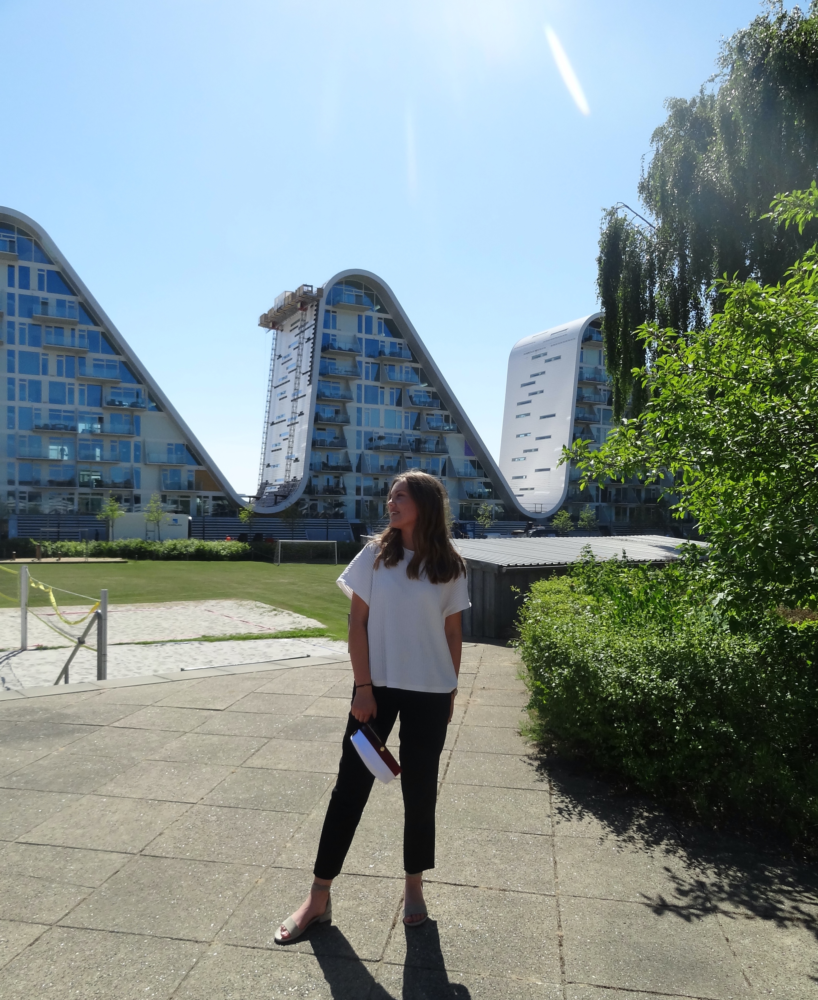

About me

Hello, I'm Eva
This is my portfolio - you can browse around and take a look at the different projects that I've made. I'm 23 years old studying Digital design BA at Aarhus University. Here we learn all about how humans interact with and together on digital artefacts. We learn about the culture, data and much more that surrounds the technological world.
My role
We're doing a lot of group work and project. As example, we've just made a designproject (you can read about it here if you haven't already). When workind in groups I can take on different roles. As mentioned, working with the designproject all four groupmembers were able to have a say in what directions we should go, but at times we also had our seperate tasks to get it all done. What i did was coding one of the games and making questionnares.
Contact
- AU-mail: 202008018@post.au.dk
- Private mail: es.evasoerensen@gmail.com
- Phone: +45 26 17 53 86